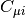
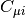
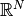
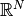
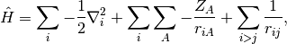
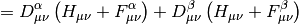
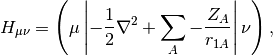
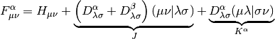
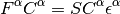

HF: Hartree–Fock Theory¶
Code author: Justin M. Turney, Robert M. Parrish, and Andrew C. Simmonett
Section author: Robert M. Parrish
Module: Keywords, PSI Variables, LIBSCF_SOLVER, LIBMINTS, LIBFOCK, LIBDIIS
Introduction¶
Self-Consistent-Field (SCF) theory forms the cornerstone of ab initio quantum chemistry. Here SCF refers both to conventional Hartree–Fock (HF) molecular orbital theory and also to generalized Kohn–Sham Density Functional Theory (KS-DFT). PSI4 contains a wholly rewritten SCF code, including many of the most popular spin specializations, several efficient numerical methods for treating Fock Matrix construction, and a brand new KS-DFT code featuring many of the most popular DFT functional technologies.
An illustrative example of using the SCF module is as follows:
molecule {
0 3
O
O 1 1.21
}
set {
basis cc-pvdz
guess sad
reference uhf
scf_type pk
}
energy('scf')
This will run a UHF computation for triplet molecular oxygen (the ground state) using a PK algorithm for the Electron Repulsion Integrals (ERI) and starting from a Superposition of Atomic Densities (SAD) guess. DF integrals are automatically used to converge the DF-SCF solution before the PK algorithm is activated. After printing all manner of titles, geometries, sizings, and algorithm choices, the SCF finally reaches the iterations:
Total Energy Delta E RMS |[F,P]|
@UHF iter 0: -149.76816019169962 -1.49768e+02 1.36000e-01
@UHF iter 1: -149.59759112756984 1.70569e-01 2.42437e-02
@UHF iter 2: -149.62372414554761 -2.61330e-02 6.10239e-03 DIIS
@UHF iter 3: -149.62643112722810 -2.70698e-03 2.17299e-03 DIIS
@UHF iter 4: -149.62690062294968 -4.69496e-04 5.66895e-04 DIIS
@UHF iter 5: -149.62694151409750 -4.08911e-05 1.26359e-04 DIIS
@UHF iter 6: -149.62694337042228 -1.85632e-06 1.84114e-05 DIIS
@UHF iter 7: -149.62694340901407 -3.85918e-08 2.91692e-06 DIIS
@UHF iter 8: -149.62694340999002 -9.75945e-10 3.11857e-07 DIIS
DF guess converged.
...
@UHF iter 9: -149.62730705470665 -3.63645e-04 8.63718e-05 DIIS
@UHF iter 10: -149.62730737347948 -3.18773e-07 1.50227e-05 DIIS
@UHF iter 11: -149.62730738537107 -1.18916e-08 3.80497e-06 DIIS
@UHF iter 12: -149.62730738624032 -8.69250e-10 7.06690e-07 DIIS
The first set of iterations are from the DF portion of the computation, the second set use the exact (but much slower) PK algorithm. Within the DF portion of the computation, the zeroth-iteration uses a non-idempotent density matrix obtained from the SAD guess, so the energy is unphysically low. However, the first true iteration is quite close to the final DF energy, highlighting the efficiency of the SAD guess. Pulay’s DIIS procedure is then used to accelerate SCF convergence, with the DF phase reaching convergence in eight true iterations. When used together, SAD and DIIS are usually sufficient to converge the SCF for all but the most difficult systems. Additional convergence techniques are available for more difficult cases, and are detailed below. At this point, the code switches on the requested PK integrals technology, which requires only four full iterations to reach convergence, starting from the DF guess. This hybrid DF/conventional procedure can significantly accelerate SCF computations requiring exact integrals, especially when used in concert with the integral-direct conventional algorithm.
After the iterations are completed, a number of one-electron properties are printed, and some bookkeeping is performed to set up possible correlated computations. Additional one-electron properties are available by increasing the PRINT option. Also printed are the occupied and virtual orbital energies, which are useful in elucidating the stability and reactivity of the system.
Theory¶
The objective of Hartree-Fock (HF) Theory is to produce the optimized Molecular
Orbitals (MOs)  ,
,

Here,  are the basis functions, which, in PSI4 are
contracted cartesian Gaussian functions often referred to as Atomic Orbitals
(AOs). The matrix  contains the MO coefficients, which are the
constrained variational parameters in Hartree-Fock. The molecular orbitals, are
used to build the simplest possible antisymmetric wavefunction, a single Slater
determinant,
are the basis functions, which, in PSI4 are
contracted cartesian Gaussian functions often referred to as Atomic Orbitals
(AOs). The matrix  contains the MO coefficients, which are the
constrained variational parameters in Hartree-Fock. The molecular orbitals, are
used to build the simplest possible antisymmetric wavefunction, a single Slater
determinant,

This form for the Hartree-Fock wavefunction is actually entirely equivalent to
treating the electron correlation as a mean field repulsion in
 instead of a more complicated effect in
.
instead of a more complicated effect in
.
Considering the electronic Hamiltonian,

the Hartree-Fock energy is, by Slater’s rules,
![E_{\mathrm{HF}} =
\langle \Psi_0 | \hat H | \Psi_0 \rangle
= \sum_{i} \langle i | \hat h | i \rangle
+ \frac 1 2 \sum_{i,j} [ii|jj] - [ij|ji]](_images/math/6eddc70832ca9a0f75dc8b64c1d09577279b738a.png)

Here  is the AO-basis one-electron potential, encapsulating both
electron-nuclear attraction and kinetic energy,
is the AO-basis one-electron potential, encapsulating both
electron-nuclear attraction and kinetic energy,

 is the AO-basis density matrix, build from the occupied orbital
coefficients,
is the AO-basis density matrix, build from the occupied orbital
coefficients,

and  is the Fock matrix, which is the effective one-body potential at
the current value of the density,
is the Fock matrix, which is the effective one-body potential at
the current value of the density,

Here the tensor  is an AO Electron-Repulsion
Integral (ERI) in chemists’ notation,
is an AO Electron-Repulsion
Integral (ERI) in chemists’ notation,

The MO coefficients are found as the generalized eigenvectors of the Fock Matrix,

The eigenvalues  are the orbital energies, and the metric matrix
are the orbital energies, and the metric matrix
 is the AO-basis overlap matrix
is the AO-basis overlap matrix

Note that the Fock Matrix depends on the density (both alpha and beta), and therefore the orbitals. Because of this, SCF is a nonlinear procedure, which terminates when the generating orbitals are self-consistent with the Fock matrix they generate.
The formation of the Coulomb matrix  and the exchange matrix
and the exchange matrix
 dominate the computational effort of the SCF procedure. For
very large systems, diagonalization of the Fock matrix can also present a
significant hurdle.
dominate the computational effort of the SCF procedure. For
very large systems, diagonalization of the Fock matrix can also present a
significant hurdle.
Minimal Input¶
Minimal input for a Hartree-Fock computation is a molecule block, basis set option, and a call to energy('scf'):
molecule {
He
}
set basis sto-3g
energy('scf')
This will run a Restricted Hartree-Fock (RHF) on neutral singlet Helium in
 spatial symmetry with a minimal STO-3G basis, 1.0E-6
energy and 1.0E-5 density convergence criteria (since single-point, see
SCF Convergence & Algorithm), a DF ERI algorithm, symmetric
orthogonalization, DIIS, and a core Hamiltonian guess. For more
information on any of these options, see the relevant section below.
spatial symmetry with a minimal STO-3G basis, 1.0E-6
energy and 1.0E-5 density convergence criteria (since single-point, see
SCF Convergence & Algorithm), a DF ERI algorithm, symmetric
orthogonalization, DIIS, and a core Hamiltonian guess. For more
information on any of these options, see the relevant section below.
Spin/Symmetry Treatment¶
PSI4 implements the most popular spin specializations of Hartree-Fock theory, including:
- Restricted Hartree-Fock (RHF) [Default]
- Appropriate only for closed-shell singlet systems, but twice as efficient as the other flavors, as the alpha and beta densities are constrained to be identical.
- Unrestricted Hartree-Fock (UHF)
- Appropriate for most open-shell systems, and fairly easy to converge.
The spatial parts of the alpha and beta orbitals are fully independent of each
other, which allows a considerable amount of flexibility in the wavefunction.
However, this flexibility comes at the cost of spin symmetry; UHF wavefunctions
need not be eigenfunctions of the
 operator. The deviation of
this operator from its expectation value is printed on the output file. If the
deviation is greater than a few hundredths, it is advisable to switch to an
ROHF to avoid this “spin-contamination” problem.
operator. The deviation of
this operator from its expectation value is printed on the output file. If the
deviation is greater than a few hundredths, it is advisable to switch to an
ROHF to avoid this “spin-contamination” problem. - Restricted Open-Shell Hartree-Fock (ROHF)
- Appropriate for open-shell systems where spin-contamination is problem. Sometimes more difficult to converge, and assumes uniformly positive spin polarization (the alpha and beta doubly-occupied orbitals are identical).
- Constrained Unrestricted Hartree-Fock (CUHF)
- A variant of ROHF that starts from a UHF ansatz, and is therefore often easier to converge.
These can be invoked by the REFERENCE keyword, which defaults to RHF. The charge and multiplicity may either be specified in the molecule definition:
molecule h {
0 2 # Neutral doublet
H
}
or, dynamically, by setting the relevant attributes in the Python molecule object:
h.set_molecular_charge(0)
h.set_multiplicity(2)
Abelian spatial symmetry is fully supported in PSI4, and can be used to obtain physical interpretation of the molecular orbitals, to assist in difficult convergence cases, and, in some methods, to obtain significant performance gains. The point group of the molecule is inferred when reading the molecule section, and may be overridden by the symmetry flag, as in:
molecule h {
0 2
H
symmetry c1
}
or by the set_point_group Python molecule attribute:
h.set_point_group('c2v')
During the SCF procedure, the occupation of orbitals is typically determined by
the Aufbau principal across all spatial symmetries. This may result in the
occupation shifting between iterations. If the occupations are known a priori,
they may be clamped throughout the procedure by using the DOCC and
SOCC options. For instance, all good quantum chemists know that
 water is
actually,:
water is
actually,:
molecule h2o {
0 1
O
H 1 1.0
H 1 1.0 2 104.5
}
set {
docc [3,0,1,1] # 1A1 2A1 1B1 3A1 1B2
basis cc-pvdz
}
energy('scf')
Broken Symmetry¶
For certain problems, such diradicals, allowing the spin-up and spin-down orbitals to differ in closed-shell computations can be advantageous; this is known as symmetry breaking. The resulting wavefunction will often provide superior energetics, due to the increased flexibility, but will suffer non-physicical spin contamination from higher multiplicity states. PSI4 can compute a high-spin triplet wavefunction and then use this as a guess for the broken-symmetry low spin state. To do this, you request broken symmetry in the energy() call, using one of the following::
energy('uhf', brokensymmetry=True)
or, equivalently
set reference uhf
energy('scf', brokensymmetry=True)
Orthogonalization¶
One of the first steps in the SCF procedure is the determination of an orthogonal basis (known as the OSO basis) from the atomic orbital basis (known as the AO basis). The Molecular Orbital basis (MO basis) is then built as a particular unitary transformation of the OSO basis. In PSI4, the determination of the OSO basis is accomplished via either symmetric or canonical orthogonalization. Symmetric orthogonalization uses the symmetric inverse square root of the overlap matrix for the orthogonalization matrix. Use of symmetric orthogonalization always yields the same number of OSO functions (and thereby MOs) as AO functions. However, this may lead to numerical problems if the overlap matrix has small eigenvalues, which may occur for large systems or for systems where diffuse basis sets are used. This problem may be avoided by using canonical orthogonalization, in which an asymmetric inverse square root of the overlap matrix is formed, with numerical stability enhanced by the elimination of eigenvectors corresponding to very small eigenvalues. As a few combinations of AO basis functions may be discarded, the number of canonical-orthogonalized OSOs and MOs may be slightly smaller than the number of AOs. In PSI4, symmetric orthogonalization is used by default, unless the smallest overlap eigenvalue falls below the user-supplied double option S_TOLERANCE, which defaults to 1E-7. If the smallest eigenvalue is below this cutoff, canonical orthogonalization is forced, and all eigenvectors corresponding to eigenvalues below the cutoff are eliminated. Use of canonical orthogonalization can be forced by setting the S_ORTHOGONALIZATION option to CANONICAL. Note that in practice, the MOs and OSOs are built separately within each irrep from the symmetry-adapted combinations of AOs known as Unique Symmetry Orbitals (USOs). For canonical orthogonalization, this implies that the number of MOs and OSOs per irrep may be slightly smaller than the number of USOs per irrep.
A contrived example demonstrating OSOs/MOs vs. AOs with symmetry is shown below:
molecule h2o {
0 1
O
H 1 1.0
H 1 1.0 2 104.5
symmetry c2 # Two irreps is easier to comprehend
}
set {
s_tolerance 0.0001 # Set an unreasonably tight
# tolerance to force canonical
basis aug-cc-pv5z # This diffuse basis will have
# small-ish eigenvalues for even H2O
}
energy('scf')
Output:
... Initialization ...
==> Pre-Iterations <==
Minimum eigenvalue in the overlap matrix is 1.6888059293E-05.
Using Canonical Orthogonalization with cutoff of 1.0000000000E-04.
Overall, 3 of 287 possible MOs eliminated.
... Initial Orbital Guess Information ...
-------------------------------------------------------
Irrep Nso Nmo Nalpha Nbeta Ndocc Nsocc
-------------------------------------------------------
A 145 144 3 3 3 0
B 142 140 2 2 2 0
-------------------------------------------------------
Total 287 284 5 5 5 0
-------------------------------------------------------
In this example, there are 287 AO basis functions after spherical harmonics are applied. These are used to produce 287 symmetry adapted USOs, 145 of which are assigned to irrep A, and 142 of which are assigned to irrep B. Within irrep A, 144 OSOs fall above the eigenvalue cutoff, and within irrep B 140 OSOs fall above the eigenvalue cutoff. In total, 284 molecular orbitals are chosen from 287 AOs/USOs. The table also shows the initial assignment of electrons to irreps.
Initial Guess/Convergence Stabilization¶
In each step of the SCF procedure, a new Fock or Kohn–Sham potential is built according to the previous density, following which the potential is diagonalized to produce new molecular orbitals, from which a new density is computed. This procedure is continued until either convergence is reached or a preset maximum number of iterations is exceeded. Convergence is determined by both change in energy and root-mean-square change in density matrix values, which must be below the user-specified E_CONVERGENCE and D_CONVERGENCE, respectively. The maximum number of iterations is specified by the MAXITER option. It should be noted that SCF is a chaotic process, and, as such, often requires careful selection of initial orbitals and damping during iterations to ensure convergence. This is particularly likely for large systems, metallic systems, multireference systems, open-shell systems, anions, and systems with diffuse basis sets.
For initial orbital selection, several options are available. These include:
- CORE [Default]
- Diagonalization of the core Hamiltonian, removing even mean-field electron repulsion. Simple, but often too far from the final solution for larger systems. READ becomes the default for the second and later iterations of geometry optimizations.
- SAD
- Superposition of Atomic Densities. Builds the initial density as the spin-averaged sum of atomic UHF computations in the current basis. If an open-shell system, uniform scaling of the spin-averaged density matrices is performed. If orbitals are needed (e.g., in density fitting), a partial Cholesky factorization of the density matrices is used. Often extremely accurate, particularly for closed-shell systems.
- GWH
- Generalized Wolfsberg-Helmholtz, a simple Huckel-Theory-like method based on the overlap and core Hamiltonian matrices. May be useful in open-shell systems.
- READ
- Read the previous orbitals from a checkpoint file, casting from one basis to another if needed. Useful for starting anion computations from neutral orbitals, or after small geometry changes. At present, casting from a different molecular point group is not supported. This becomes the default for the second and later iterations of geometry optimizations.
These are all set by the GUESS keyword. Also, an automatic Python procedure has been developed for converging the SCF in a small basis, and then casting up to the true basis. This can be done by adding BASIS_GUESS = SMALL_BASIS to the options list. We recommend the 3-21G basis for the small basis due to its efficient mix of flexibility and compactness. An example of performing an RHF solution of water by SAD guessing in a 3-21G basis and then casting up to cc-pVTZ is shown below:
molecule h2o {
0 1
O
H 1 1.0
H 1 1.0 2 104.5
}
set {
basis cc-pvtz
basis_guess 3-21G
guess sad
}
energy('scf')
With regard to convergence stabilization, Pulay’s Direct Inversion of the Iterative Subspace (DIIS) extrapolation, Gill’s Maximum Overlap Method (MOM), and damping are all implemented. A summary of each is presented below,
- DIIS [On by Default]
- DIIS uses previous iterates of the Fock Matrix together with an error criterion based on the orbital gradient to produce an informed estimate of the next Fock Matrix. DIIS is almost always necessary to converge the SCF procedure and is therefore turned on by default. In rare cases, the DIIS algorithm may need to be modified or turned off altogether, which may be accomplished via the options detailed below.
- MOM [Off by Default]
- MOM was developed to combat a particular class of convergence failure:
occupation flipping. In some cases, midway though the SCF procedure, a partially
converged orbital which should be occupied in the fully-optimized SCF solution
has a slightly higher orbital eigenvalue than some other orbital which should be
destined to be a virtual orbital. This results in the virtual orbital being
spuriously occupied for one or more iterations. Sometimes this resolves itself
without help, other times the occupation flips back and forth between two, four,
or more orbitals. This is typically visible in the output as a non-converging
SCF which eventually settles down to steady oscillation between two (or more)
different total energies. This behavior can be ameliorated by choosing occupied
orbitals by “shape” instead of by orbital eigenvalue, i.e., by choosing the set
of new orbitals which looks most like some previously known “good” set. The
“good” set is typically the occupied orbitals from an one of the oscillating
iterations with the lowest total energy. For an oscillating system where the
lowest total energy occurs on iterations
 , invoking
MOM_START
, invoking
MOM_START  can often rescue the convergence of the SCF. MOM can
be used in concert with DIIS, though care should be taken to not turn MOM on
until the oscillatory behavior begins.
can often rescue the convergence of the SCF. MOM can
be used in concert with DIIS, though care should be taken to not turn MOM on
until the oscillatory behavior begins. - Damping [Off by Default]
- In some cases, a static mixing of Fock Matrices from adjacent iterations can quench oscillations. This mixing, known as “damping” can be activated by setting the DAMPING_PERCENTAGE keyword to a nonzero percent.
ERI Algorithms¶
The key difficulty in the SCF procedure is treatment of the four-index ERI contributions to the Fock Matrix. A number of algorithms are available in PSI4 for these terms. The algorithm is selected by the SCF_TYPE keyword, which may be one of the following
- PK [Default]
- An out-of-core, presorted algorithm using exact ERIs. Quite fast for a zero-error algorithm if enough memory is available. Integrals are generated only once, and symmetry is utilized to reduce number of integrals.
- OUT_OF_CORE
- An out-of-core, unsorted algorithm using exact ERIs. Overcomes the memory bottleneck of the current PK algorithm. Integrals are generated only once, and symmetry is utilized to reduce number of integrals.
- DIRECT
- A threaded, sieved, integral-direct algorithm, with full permutational symmetry. This algorithm is brand new, but seems to be reasonably fast up to 1500 basis function, uses zero disk, and can obtain significant speedups with negligible error loss if the INTS_TOLERANCE value is set to 1.0E-8 or so.
- DF [Default]
- A density-fitted algorithm designed for computations with thousands of
basis functions. This algorithm is highly optimized, and is threaded
with a mixture of parallel BLAS and OpenMP. Note that this algorithm
should use the -JKFIT series of auxiliary bases, not the -RI or
-MP2FIT bases. The default guess for auxiliary basis set should work
for all Dunning bases, otherwise the DF_BASIS_SCF keyword can
be used to manually specify the auxiliary basis. This algorithm is
preferred unless either absolute accuracy is required
[
 CCSD(T)] or a -JKFIT auxiliary basis is unavailable
for the primary basis/atoms involved.
CCSD(T)] or a -JKFIT auxiliary basis is unavailable
for the primary basis/atoms involved. - CD
- A threaded algorithm using approximate ERI’s obtained by Cholesky decomposition of the ERI tensor. The accuracy of the Cholesky decomposition is controlled by the keyword CHOLESKY_TOLERANCE. This algorithm is similar to the DF algorithm, but it is not suitable for gradient computations. The algorithm to obtain the Cholesky vectors is not designed for computations with thousands of basis functions.
For some of these algorithms, Schwarz and/or density sieving can be used to identify negligible integral contributions in extended systems. To activate sieving, set the INTS_TOLERANCE keyword to your desired cutoff (1.0E-12 is recommended for most applications).
Recently, we have added the automatic capability to use the extremely fast DF code for intermediate convergence of the orbitals, for SCF_TYPE other than DF. At the moment, the code defaults to cc-pVDZ-JKFIT as the auxiliary basis, unless the user specifies DF_BASIS_SCF manually. For some atoms, cc-pVDZ-JKFIT is not defined, so this procedure will fail. In these cases, you will see an error message of the form:
RuntimeError: sanity check failed! Gaussian94BasisSetParser::parser:
Unable to find the basis set for HE
This failure can be fixed by either setting DF_BASIS_SCF to an auxiliary basis set defined for all atoms in the system, or by setting DF_SCF_GUESS to false, which disables this acceleration entirely.
Convergence and Algorithm Defaults¶
| Ab Initio Method | Calculation Type | E_CONVERGENCE | D_CONVERGENCE | SCF_TYPE |
|---|---|---|---|---|
| SCF of HF or DFT | energy | 6 | 6 | DF |
| optimization | 8 | 8 | ||
| frequency [7] | 8 | 8 | ||
| SCF of post-HF | energy | 8 | 8 | PK [3] |
| optimization | 10 | 10 | ||
| frequency [7] | 10 | 10 | ||
| CC property [2] | 10 | 10 |
| Ab Initio Method | Calculation Type | E_CONVERGENCE [5] | R_CONVERGENCE [6] |
|---|---|---|---|
| post-HF of post-HF | energy | 6 | |
| optimization | 8 | ||
| frequency [7] | 8 | ||
| CC property [2] | 8 |
Footnotes
| [1] | Note that this table applies only the SCF module, not to the final convergence criteria for post-HF methods or to methods that use an alternate starting point, like MCSCF. SAPT computations, too, set tighter values. |
| [2] | (1, 2) This applies to properties computed through the property() function. |
| [3] | Post-HF methods that do not rely upon the usual 4-index AO integrals use a density- fitted SCF reference. That is, for DF-MP2 and SAPT, the default SCF_TYPE is DF. |
| [4] | Note that this table applies to the final convergence criteria for all the post-SCF modules that define a E_CONVERGENCE keyword. |
| [5] | The E_CONVERGENCE keyword is implemented for most post-SCF modules. See a list beginning at E_CONVERGENCE. |
| [6] | The R_CONVERGENCE keyword places a convergence check on an internal residual error measure and is implemented for several post-SCF modules (see list beginning at R_CONVERGENCE). It is defined according to the quantum chemical method and so its default value is set by each module individually. |
| [7] | (1, 2, 3) For frequency computations by finite difference of energies, convergence criteria are tightened further still to 10 for E_CONVERGENCE and D_CONVERGENCE for SCF of HF or DFT, 11 for E_CONVERGENCE and D_CONVERGENCE for SCF of post-HF, and 10 for E_CONVERGENCE for post-HF of post-HF. |
Recommendations¶
The SCF code is already quite flexible and powerful, with new features being added weekly. We have tried as much as possible to keep the number of options to a minimum, and to allow all options to be used in the presence of all other options. Below are some rough words of advice about using the SCF code for practical calculations:
- For GUESS, the SAD guess is usually your friend, even for open-shell systems (at the very least, it gets the right number of electrons, unlike some other programs). For instance, we have found that a simple SAD guess is often as good as doing a full SCF in a 3-21G basis and then performing a cast-up, at a fraction of the cost. However, SAD and DOCC/SOCC arrays do not play very well together at the moment. Also, the SAD UHF guess is very slow in large basis sets, so you may want to cast up for >TZ.
- For wall time, DF may be a factor of ten or more faster than the exact integral technologies available in PSI4. Use DF unless you need absolute accuracy or do not have a -JKFIT auxiliary set for your primary basis/atom type. Then use DIRECT.
- Don’t mess with the DIIS convergence options unless convergence is a problem. We have optimized the parameters for efficiency over a wide array of system types.
- Buy a developer a beer!
The “best-practice” input file for HF is:
memory 1 GB # As much as you've got, the DF algorithm can use
molecule {
O
H 1 1.0
H 1 1.0 2 104.5
}
set {
basis cc-pvdz
scf_type df
guess sad
ints_tolerance 1.0E-10 # Even this is epically tight, 1.0E-8 is OK
}
energy('scf')